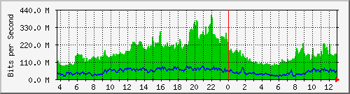

Traffic Analysis for Gi1/0/2 -- spider.sky
| System: | spider.sky in stoyka |
| Maintainer: | falcon@skyinet.org |
| Description: | GigabitEthernet1/0/2 Dlink-3120 |
| ifType: | ethernetCsmacd (6) |
| ifName: | Gi1/0/2 |
| Max Speed: | 1000.0 Mbits/s |
| Ip: | No Ip (No DNS name) |
The statistics were last updated Thursday, 26 October 2017 at 12:55,
at which time 'spider.sky' had been up for 8 days, 10:32:41.
`Daily' Graph (5 Minute Average)

|
Max |
Average |
Current |
| In |
408.5 Mb/s (40.8%) |
173.5 Mb/s (17.3%) |
149.7 Mb/s (15.0%) |
| Out |
83.1 Mb/s (8.3%) |
47.1 Mb/s (4.7%) |
42.4 Mb/s (4.2%) |
`Weekly' Graph (30 Minute Average)
|
Max |
Average |
Current |
| In |
413.4 Mb/s (41.3%) |
181.5 Mb/s (18.1%) |
164.7 Mb/s (16.5%) |
| Out |
137.7 Mb/s (13.8%) |
63.0 Mb/s (6.3%) |
54.4 Mb/s (5.4%) |
`Monthly' Graph (2 Hour Average)
|
Max |
Average |
Current |
| In |
360.9 Mb/s (36.1%) |
174.1 Mb/s (17.4%) |
147.1 Mb/s (14.7%) |
| Out |
125.0 Mb/s (12.5%) |
58.7 Mb/s (5.9%) |
49.8 Mb/s (5.0%) |
`Yearly' Graph (1 Day Average)
|
Max |
Average |
Current |
| In |
234.3 Mb/s (23.4%) |
142.1 Mb/s (14.2%) |
188.1 Mb/s (18.8%) |
| Out |
120.7 Mb/s (12.1%) |
63.0 Mb/s (6.3%) |
50.7 Mb/s (5.1%) |
| GREEN ### |
Incoming Traffic in Bits per Second |
| BLUE ### |
Outgoing Traffic in Bits per Second |